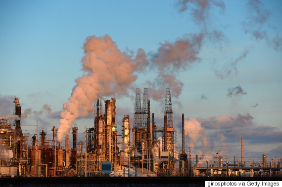
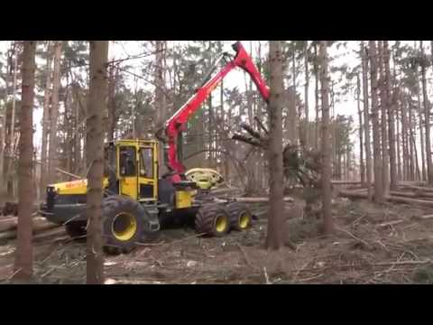
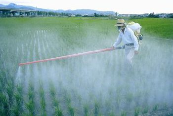

Things Have impacted the Earth
- Electricity and heat
- Transportation
- Manufacturing and Construction
- Agriculture
- Industrial Processes
- Fossil Fules
- Deforestation
Impact of Human Activities on the Earth
Home
Introduction
Fossil Fules
Clearing Forest
Fertilization
Global Warming



Contact Information- 19singhh@bordentown.k12.nj.us
Harpreet Singh
Published- June 11, 2018